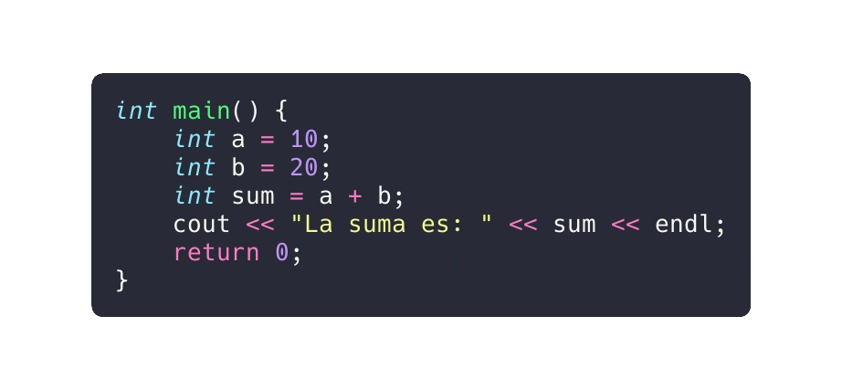

Las estructuras de control en C++ nos permiten dirigir el flujo de ejecución en un programa. A continuación, te presento los tres tipos básicos de lógica de control y ejemplos de código real:
La lógica secuencial sigue un flujo serial o secuencial en el que la ejecución depende de las instrucciones dadas al ordenador. A menos que se proporcionen nuevas instrucciones, los módulos se ejecutan en secuencia. Ejemplo de lógica secuencial:
La lógica de selección implica condiciones o parámetros que deciden entre varios módulos escritos. Estas estructuras se conocen como estructuras condicionales. Algunos tipos de estructuras condicionales son los siguientes:
La lógica de iteración utiliza bucles para repetir un conjunto de instrucciones. Hay dos tipos de estructuras de bucle: